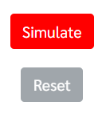

User manual
For the most efficiency, please follow the instructions below
Slide bar is use to configuration of paper helicopter elements. User can choose size of paper helicopter about wing and body by 20, 40, 60, 80 and 100 millimeters

When user already choose size of paper helicopter, click on "Simulate" button to simulate

When program started, The paper helicopter will dropdown.It will show time and animation about GOOD droup or BAD drop.
If user want to simulate again, please click on "Reset" button.
P.S.: Time in simulation is refer from real experiments.